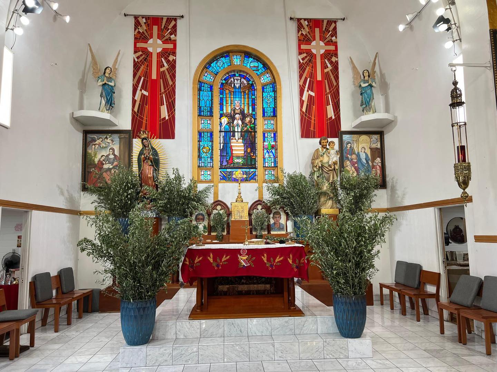

Acompañenos en Semana Santa!

Presentation of Mary Parish, located in South Central Los Angeles, is a vibrant and welcoming Catholic community led by Father Fredy Rosales. Rooted in faith and service, our parish not only serves the local community but also extends its mission beyond borders. Father Fredy actively supports those in need in places such as El Salvador, Tecate, Mexico, and communities in Africa.
En El Salvador, apoya un hogar de ancianos en el municipio de Apopa, donde recientemente proporcionó nuevos colchones para mejorar las condiciones de vida de los residentes. Cada año, también viaja a Tecate, México, para llevar ropa, cobijas y preparar alimentos para familias necesitadas. Aquí en nuestra parroquia, también servimos a la comunidad local con un banco de comida cada jueves. Somos una comunidad unida en la fe, donde todos son bienvenidos.